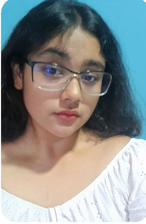

PORTAFOLIO PERSONAL 2026
Hola, soy
Evelin Morales_
Estudiante de Ingeniería en Desarrollo de Software
Me gusta convertir ideas en experiencias digitales útiles. Exploro el desarrollo web creando proyectos, aprendiendo nuevas herramientas y cuidando cada detalle.

DEVELOPERSV / 26
Curiosidad que
se convierte en código.
Soy estudiante de Ingeniería en Desarrollo de Software. Disfruto aprender construyendo: probar una idea, entender cómo funciona y transformarla en algo que otras personas puedan usar.
Me interesa el desarrollo web de principio a fin, desde interfaces claras y atractivas hasta servicios que las hacen funcionar. Cada proyecto es una oportunidad para crecer y colaborar.
Siempre creando.
Mi stack
en evolución.
Herramientas que estoy usando y fortaleciendo en mis proyectos.
IDEAS HECHAS PROYECTO
Pequeña muestra,
muchas ganas.
PROYECTOS
Gestión de taller
Proyecto de gestión para un taller, desarrollado como parte de mi formación en programación orientada a objetos.
Gestor de recetas
Aplicación para organizar recetas en un proyecto que combina diseño de interfaz y lógica de software.
Servicio web para cafetería
Puesta en marcha de un servicio en Apache para una cafetería, como proyecto práctico de sistemas y redes.
¿HACEMOS ALGO GENIAL?
Conversemos
sobre ideas.
Estoy abierta a aprender, colaborar y explorar nuevas oportunidades en tecnología.
evelincaroflores46@gmail.com ↗BUILD
✳